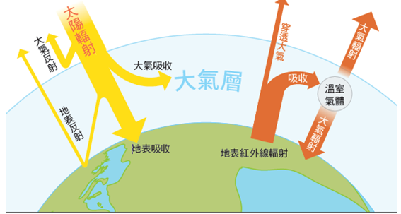
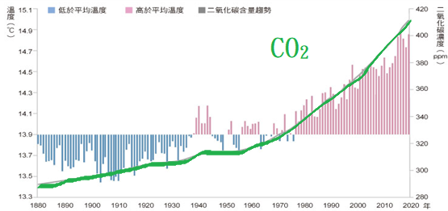

1. 太陽輻射的部分能量能夠穿透大氣到達地表，當地表吸收太陽輻射之後，再將能量以紅外線向外輻射，大氣中的溫室氣體-水氣、二氧化碳及甲烷等，吸收由地表輻射出來的紅外線，將熱能留在地表附近的大氣層中，使氣溫升高，此過程稱為溫室效應。
2. 現今全球的地表平均溫度約為15℃，若大氣中沒有溫室氣體，則溫度將會降至約攝氏零下十幾度。
3. 工業革命後，人類活動使二氧化碳、甲烷含量不斷上升，加劇溫室效應，造成了全球暖化的現象。
4. 全球暖化造成的影響：
(1) 海平面上升：山區及極地冰川的融化。
(2) 氣候改變：增加乾旱、洪水、熱浪、寒潮等極端天氣的發生頻率。
(3) 氣候難民：
a. 吐瓦魯共和國，因海平面上升威脅，居民被迫移民至紐西蘭。
b. 物種生活範圍移向高緯度或面臨滅絕。
5. 對台灣影響：
(1) 豪雨日數略微上升 (2) 小雨日數顯著減少 (3) 持續往極端氣候方向發展。
6. 永續發展：
(1) 減緩：減少排放量使影響和緩。
(2) 調適：採取措施降低已發生或未來的風險。
(3) 1997年京都議定書；2015年巴黎協定(控制升溫1.5∼2.0℃)；2012年發布17項SDGs。
1. 溫室氣體主要是吸收地表向外輻射的哪一種能量，從而留住熱能？
A. 紫外線2. (是非) 若地球大氣完全沒有溫室氣體，地表平均氣溫仍會維持在 15℃ 左右。
正確3. (多選) 關於全球暖化對台灣及環境的影響，下列哪些敘述正確？
吐瓦魯因海平面上升面臨國土消失4. (填空) 西元2015年簽署的「」，目標是將全球升溫控制在 2℃ 以內。